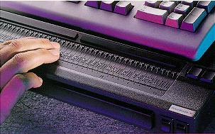
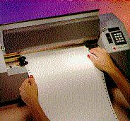

アクセシビリティソフトウェア ： 現在どこまで来ているか？
Contents
- 現在どこまで来ているか？
- 画面上のコンテンツにアクセスする代替方法
- コンピュータにコマンドを与え、データーを入力する代替方法
- 嗚呼！ 問題は状況理解の欠如
- 主役の登場：状況理解を提供する API
- 何をするべきだろう？
現在どこまで来ているか？
- 画面上に表示されるテキストや画像を読み反応できる。
- 標準のキーボードをタイプできる。
- テキスト、写真、その他の情報をマウスを使って選択できる。
- 音の再生に対応できる（ほとんどのソフトウェアでは、処理結果が音声のみで伝えられるということはありません。そのため、この点は他と比べれば幾分か制約の程度が低いと言えます）。
- 文字読書き不可能: 視力障害、聾盲、弱視、視野障害、難読症、認識機能障害、非識字者などの人々。
- 運動障害: 切断患者、麻痺、反復性ストレス、脳性まひ、筋ジストロフィー、パーキンソン病、その他運動を制限する障害。
- 難聴
- 画面読み上げソフトは、テキストを発声するハードやソフトを使用して画面上に表示されたテキストを読み上げ、視力障害者が、マウスで行う操作をキーボードで代替できるようにします。
- 代替入力装置は、運動障害のある人たち向けの、キーボードやマウスの代替物です。
- 音声認識ソフトウェアは、コンピュータへ向かって話すことで、キーボードをタイプしたり、マウスで選択することを代行可能にします。
- 画面拡大鏡ソフトウェアは、弱視者が画面の各部を楽に読めるようにします。
- 理解力ソフトウェアは、難読症や学習障害のユーザが、コンピュータの画面で操作されているように見たり聞いたりできるようにします。
過去 20 年間に渡ってコンピュータソフトウェアのアクセシビリティは大変な改善を見ました。この記事では、その発展の経緯と、これまで開発されてきた技術を振り返ります。
現時点に到るまで、デスクトップコンピュータ環境の背景にある最大の推進力は Microsoft であり、最初は MS DOS によって、そして Microsoft Windows のシリーズがその後に続きました。これらのオペレーテイングシステムは身体に障害のある人たちの要求に配慮して設計されたわけでありませんでした。視覚障害や運動機能障害のある人たちの多くは Microsoft オペレーテイングシステム用に書かれたアプリケーションを使用できませんでした。これらのアプリケーションはコンピュータのユーザは次のことができる事を前提としています:
もし上に挙げられた動作を満足できない人がいれば、広く使われているコンピュータアプリケーションの多くを使用出来ないことが分かります。これらの動作を満足することの出来ない人たちのグループは以下のとおりです。:
視野、視覚、運動能力に問題を感じ始めている、増加中のべービーブーマー世代の老人たちについても考慮しなければなりません。これらのグループの人々を合算すると潜在的なユーザがとても多いことになります!
これらの問題に応えるために、アクセシビリティのハードやソフトの、多くの小規模なベンダーが、通常のコンピュータアプリケーションを使用する基本的動作のどれかひとつを満足できない人を支援する製品とソフトウェアを作りました。これらの補助的機器やソフトウェアの例として:
事実、適応技術を提供するすべての産業は、これらの問題をめぐって成長してきています。この業界を訪ねて知る事ができるすばらしい場として、ロサンゼルスの CSUN コンファランス があり、毎年 3 月中旬に開催されます。
画面上のコンテンツにアクセスする代替方法
- テキスト読み上げ(TTS) は、コンピュータがユーザに話しかけるようにします: 文字を全く読めない人たちは普通読み上げプログラムを使います (text-to-speech) 。読み上げプログラムはまた難読症などの視力障害以外の読解能力のない人たちに役立ちます。さらにテキスト読み上げは、声の代わりとして話せない人たちによっても使用されます。最終的にこの機能は、携帯情報機器や、人がどこか他所を見ていなければならない時など、大多数のユーザにとっても役立つ可能性があります。
- 拡大は画面のコンテンツを大きく見せます: 視力の低い人にとっては、より大きいフォントを使ったり、組み込みのコントラストの強いテーマを使ったり、特大のスクリーンを使ったりするだけで十分かもしれません。そうでない場合は画面拡大プログラムを使用し、マウスや現在のフォーカスに合わせて、画面の各部を拡大します。画面拡大鏡にはまた、組み込みのテキスト読み上げ機能や、黄色と黒の強対照や青と緑の弱対照などの様々な色の組み合せでテキストや画像を表示するフィルター機能を備えるものもあります。
- オプタコンは人差し指ほどの大きさに並べられた振動するピンを使って印刷された言葉、写真、画面上の情報へのアクセスを提供します。ユーザは片手で振動するピンを読み、もう一方の手で読み取るべき素材上で小型カメラを移動させます。この役に立つ装置の復活について時々話題になる事はあっても、残念なことに現在装置は製造されていません。
- 点字 は黙読用、念密な仕事用でありかつ聴覚視覚障害ユーザに使われる解決手段です。これは、点字プリンタで印刷されたハードコピーや、点字ディスプレイといった形で利用されます(下図参照)。これらの技術には、特別なドライバ、点字割り付けルーチン、ソフトウェアによるテキストから点字への翻訳が必要になります。点字自体の重要性は強調されるべきです。点字は高水準の仕事と生活の充足を、点字を読む人たちに提供できます。
視覚的手段を使用しているコンピュータプログラムが多いので、視覚障害のある人たちがそれを利用するのは難しかったり不可能であったりします。しかし訴訟にする必要はありません。文字を読めない人がどのようにしてデスクトップソフトウェアを使用しているかを以下に説明します:
{kind=link}
|  | 左図: 様々なサイズの点字ディスプレイ |
| 右図: 点字プリンタ |  |
音声と点字をベースとするユーザインターフェイスは過去の経過からみてソフトウェアの設計者が慣れていない概念です。基本的概念は簡単です。目の見えない人が情報を処理する事は、郵便ポストの差出口を通して、順を追って、規則正しく物を見るようなものです。テキスト読み上げや点字ディスプレイによって、順を追って伝えられるプレーンテキストのみの小さな単位の情報だけが知らされます。ユーザが何をするにしても、ソフトウェアは出来るだけ小さな、バイトサイズの情報で的確に応答することが求められます。理想を言えば、ソフトウエアの賢い決定によって、ユーザは極力関係ないデータを読まなくてもすむようになるのが望まれます。
コンピュータにコマンドを与え、データーを入力する代替方法
- スティッキー・キー: はキーの組合せ入力を楽にします。大文字を入力する例で言うと、最初にシフトキーを押し、次にそれを放し、最後に大文字にしたい文字を押します。この技術は使える手が片方しかない人や、手を使えない人や、口に棒をくわえてタイプする人によって使われます。
- 単一スイッチ: の技術は重度の運動障害を持つ人を援けます。ステファン・ホーキング博士のように、項目のリストの中から情報を選択することで入力を行う人もいます。 彼らは、リスト中を移動するハイライトバーを、スイッチを押して移動を開始させ、選択したい項目がハイライトされたときにスイッチを放します。
- 特殊キーボード: はデーター入力を楽にするためのものです。しかし特別な機能は一般にキーボードそれ自体の中で扱われますので、特別なプログラムは必要になりません。
- 音声認識: の技術は、ユーザがコンピュータに話しかけられるようにします。この技術は大いに進歩しました。しかしなお、主要なソフトウェアにもっと組み込まれる必要があります。
- 一貫したキーボードのサポートとホットキー: マウスを使えない人はたくさんいます。行き過ぎと言えるくらいまでに一貫したキーストロークのサポートは非常に重要な検討項目です。 盲目のテスターは、ほとんど全てのソフトウェアについてキーストロークのサポートを改善する方法を見つけだす、という才能を持っています。障害を持つ人々を使ってテストをする事は一般的に全ての人に役に立ちます。 アクセシビリティ・ツールキット・チェックリストで、あなたの UI 制御が標準に従っているか確かめてください。
もうひとつの問題は、障害のある人たちがどのように情報をコンピュータに入力するかという事です。運動障害のある人ならば、普通のキーボードをタイプしたり、マウスを使ったりできないかもしれません。以下に運動障害のある人たちが情報を入力する代替手段のいくつかを挙げます:
大きな限界 - 状況の欠如
これらのアクセシビリティ・ベンダーによって開発された解決策のお陰で、数十万の障害のある人たちの雇用と自己充足の機会が大いに改善され、その仕事の重要性は衰えることはありません。しかし、これらの解決策のすべてをもっても障害を持つ人々に完全にアクセシビリティが可能で使いやすい仕事の環境を提供するまでに到りません。これは、単に状況の問題のためです。すなわち、ユーザとコンピュータの相互作用はその相互作用が発生する状況によって支配されるという考えのためです。ユーザがキーボードに何かをタイプする時、またはアプリケーションが画面上にテキストや画像を表示する時、これらのアクションの正確な意味はそれが発生する状況によって決まります。例えば、タスクを実行中である事を示すために電球の画像を表示するアプリケーションがあるかもしれませんが、一方で別のアプリケーションはタスクが完了した事を示すために電球を表示するかもしれません。盲目の人になんとかして電球の画像の意味を知らせるアプリケーションがなければ、盲目の人はアプリケーションが何を伝えようとしているのか理解できません。 同様に、ユーザが話している事を理解するために、音声認識ソフトウェアはしばしばユーザの反応の状況についての情報が必要です。
オープンソースのソフトウェアを使う
Microsoft は Microsoft Active Accessibility について正しい方向に進んでいましたが、大企業で広く使われるほとんどのデスクトップアプリケーションのソースコードは公表されていないので、それらのアプリケーションが完全なアクセシビリティを持つことはありませんでした。しかしオープンソースでは、アクセシビリティが可能にするために必要な変更をする事はごく普通にできます。
オープンソースソフトウェアでは、アクセシビリティは、後から考え直して追加されるのではなく、中核の設計に完全に統合させることができます。そのため、障害をもつユーザの要求を満たすには、オープンソースソフトウェアは理想的です。また同様に障害を持つプログラマーは、アクセシビリティが可能でないソフトウェアを自分自身で直接修正する機会と権利を与えられるので、自分の宿命をコントロールできるチャンスをも与えられます。
その上、公平性を実現するあらゆるソフトウェア・ソリューションは、社会的インフラに不可欠なものとして、あらゆる権利の下に無償であるべきです。もし特別なハードウエアが必要でないならば、他の人たちと同じソフトウェアを使用するために障害のある人たちが余分なお金を支払うべきでしょうか。ですから、適応支援技術のベンダーには、特別なサービスやソフトウェア、あるいは独自のソフトウェアをそれに合ったプラットフォームに合わせて作る上で、これから先も重要な役割があります。現在十分に報われているわけでありませんが、理想的状態とは、補助テクノロジーの専門家がリハビリテーションホーム、訓練、サポートによって利益を得ることです。エンドユーザそれぞれが異なる問題を抱えていますから、オープンソースの世界では、高度にカスタマイズされたソリューションはそれ自体ビジネスとなり得ます。
現在、Linux 上の GUI のほとんどにはアクセシビリティがなく、この点は Microsoft Windows の方がずっと優れています。Gnome、KDE、StarOffice、KOffice、Mozilla および Linux 中の他のすべての GUI ソフトウェアパッケージは障害者の多くが使用できません。これらのパッケージの多くでの Gnome の ATK API のサポート、および GOK (Gnome Onscreen Keyboard) と Gnopernicus (スクリーンリーダと拡大鏡) の開発については多少の進展がありました。しかし本当の障害のあるエンドユーザにとってこれらの解決策は、まだ真の意味で使い勝手の良さを実現していません。
何をするべきだろう？
Mozilla 開発者
- 一般的フロントエンドのアクセシビリティ要件に従う:
XUL UI を開発する時、数多くの潜在的「裏技」があります。アクセシビリティの XUL 記述ガイドライン に一覧で提案されている実用的技術に従って下さい。このガイドラインは起こりうるたくさんのシナリオをカバーします。それらの修得に少しの時間でも費やすれば、あなたの設計技術、エンジニアリング技術は知らず知らすの内に向上するでしょう。
- 新しい部品を開発する時正しいキーボードのアクセシビリティを確保する:
Mozilla の XUL と HTML ウィジェットはすでに適当なキーボードのアクセシビリティをサポートしていますので、その点で後退しないようにしましょう。開発されるすべての新しい UI 部品は正しいキーボードサポートを必ず提供するようにして下さい。XBL を使って新ウィジェットを作る時はいつでも アクセシビリティのツールキット チェックリスト に従って下さい。
- 新制御を開発する時は nsIAccessible によって MSAA と ATK をサポートする:
Mozilla はカスタム制御がアクセシビリティが可能になるように状況を提供する最適な位置にあります。各カスタム制御用にただ nsIAccessible を作ることによってエンジニアは状況を提供できます。これを達成するインフラは簡単です。
他の開発者への機会
- Gnopernicus (Gnome
スクリーンリーダ)
- GOK (Gnome Onscreen Keyboard)
- Gnome アクセシビリティ・プロジェクト
- KDE アクセシビリティ
- 自由な標準化グループ - アクセシビリティ・ワーキンググループ